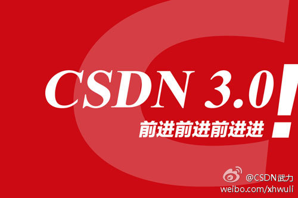

貌似报名已经满了?@CTO俱乐部:欢迎报名参加本周六深圳#CTO俱乐部# 晚宴，我们邀请到腾讯云平台总经理陈磊、CSDN&《程序员》杂志 @刘江总编 与会员共进晚餐，欢迎大数据相关的CTO俱乐部会员报名参加，我们将按照报名缴费顺序确认邀请。@CSDN @Ada李力 @CSDN云计算 网页链接
电子商务下午茶是第四期了，这次换了个咖啡馆位置，为照顾工作在北京中关村附近的朋友。@CTO俱乐部:欢迎报名参加下周二北京#CTO俱乐部# 下午茶之电子商务专场活动，京东研发部物流配送系统负责人@李鹏涛Franklin 将分享京东为迎接“双十一”进行的组织管理、系统优化、演练以及应急处理等经验，欢迎电商领域的CTO俱乐部会员免费报名参加，和大家一起交流心得体会。@CSDN @Ada李力 网页链接
@孟迎霞 @刘江总编 [呵呵]//@高峡之数据时代:其他不知道，程序员这本杂志确实办的好，建议再看办一本数据库的杂志，涵盖大数据等新兴领域@CSDN武力:10月23日CSDN宣布完成A轮融资。此轮融资额为千万美元级别，由宽带资本联合方广资本完成，同时引入英特尔投资以业务合作为核心的战略投资。CSDN将全面提升平台与产品，成为推动中国技术平台与生态系统建设的加速器。 网页链接 